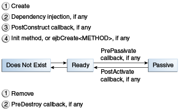

1. Enterprise Beans
Enterprise beans are Jakarta EE components that implement Jakarta Enterprise Beans technology. Enterprise beans run in the Enterprise Bean container, a runtime environment within GlassFish Server (see Container Types). Although transparent to the application developer, the Enterprise Bean container provides system-level services, such as transactions and security, to its enterprise beans. These services enable you to quickly build and deploy enterprise beans, which form the core of transactional Jakarta EE applications.
1.1. What Is an Enterprise Bean?
Written in the Java programming language, an enterprise bean is a
server-side component that encapsulates the business logic of an
application. The business logic is the code that fulfills the purpose of
the application. In an inventory control application, for example, the
enterprise beans might implement the business logic in methods called
checkInventoryLevel and orderProduct. By invoking these methods,
clients can access the inventory services provided by the application.
The following topics are addressed here:
1.1.1. Benefits of Enterprise Beans
For several reasons, enterprise beans simplify the development of large, distributed applications. First, because the Enterprise Bean container provides system-level services to enterprise beans, the bean developer can concentrate on solving business problems. The Enterprise Bean container, rather than the bean developer, is responsible for system-level services, such as transaction management and security authorization.
Second, because the beans rather than the clients contain the application’s business logic, the client developer can focus on the presentation of the client. The client developer does not have to code the routines that implement business rules or access databases. As a result, the clients are thinner, a benefit that is particularly important for clients that run on small devices.
Third, because enterprise beans are portable components, the application assembler can build new applications from existing beans. Provided that they use the standard APIs, these applications can run on any compliant Jakarta EE server.
1.1.2. When to Use Enterprise Beans
You should consider using enterprise beans if your application has any of the following requirements.
-
The application must be scalable. To accommodate a growing number of users, you may need to distribute an application’s components across multiple machines. Not only can the enterprise beans of an application run on different machines, but also their location will remain transparent to the clients.
-
Transactions must ensure data integrity. Enterprise beans support transactions, the mechanisms that manage the concurrent access of shared objects.
-
The application will have a variety of clients. With only a few lines of code, remote clients can easily locate enterprise beans. These clients can be thin, various, and numerous.
1.1.3. Types of Enterprise Beans
Table 35-1 summarizes the two types of enterprise beans. The following sections discuss each type in more detail.
Table 35-1 Enterprise Bean Types
Enterprise Bean Type |
Purpose |
Session |
Performs a task for a client; optionally, may implement a web service |
Message-driven |
Acts as a listener for a particular messaging type, such as Jakarta Messaging |
1.2. What Is a Session Bean?
A session bean encapsulates business logic that can be invoked programmatically by a client over local, remote, or web service client views. To access an application that is deployed on the server, the client invokes the session bean’s methods. The session bean performs work for its client, shielding it from complexity by executing business tasks inside the server.
A session bean is not persistent. (That is, its data is not saved to a database.)
For code samples, see Chapter 37, "Running the Enterprise Bean Examples".
The following topics are addressed here:
1.2.1. Types of Session Beans
Session beans are of three types: stateful, stateless, and singleton.
The following topics are addressed here:
Stateful Session Beans
The state of an object consists of the values of its instance variables. In a stateful session bean, the instance variables represent the state of a unique client/bean session. Because the client interacts ("talks") with its bean, this state is often called the conversational state.
As its name suggests, a session bean is similar to an interactive session. A session bean is not shared; it can have only one client, in the same way that an interactive session can have only one user. When the client terminates, its session bean appears to terminate and is no longer associated with the client.
The state is retained for the duration of the client/bean session. If the client removes the bean, the session ends and the state disappears. This transient nature of the state is not a problem, however, because when the conversation between the client and the bean ends, there is no need to retain the state.
Stateless Session Beans
A stateless session bean does not maintain a conversational state with the client. When a client invokes the methods of a stateless bean, the bean’s instance variables may contain a state specific to that client but only for the duration of the invocation. When the method is finished, the client-specific state should not be retained. Clients may, however, change the state of instance variables in pooled stateless beans, and this state is held over to the next invocation of the pooled stateless bean. Except during method invocation, all instances of a stateless bean are equivalent, allowing the Enterprise Bean container to assign an instance to any client. That is, the state of a stateless session bean should apply across all clients.
Because they can support multiple clients, stateless session beans can offer better scalability for applications that require large numbers of clients. Typically, an application requires fewer stateless session beans than stateful session beans to support the same number of clients.
A stateless session bean can implement a web service, but a stateful session bean cannot.
Singleton Session Beans
A singleton session bean is instantiated once per application and exists for the lifecycle of the application. Singleton session beans are designed for circumstances in which a single enterprise bean instance is shared across and concurrently accessed by clients.
Singleton session beans offer similar functionality to stateless session beans but differ from them in that there is only one singleton session bean per application, as opposed to a pool of stateless session beans, any of which may respond to a client request. Like stateless session beans, singleton session beans can implement web service endpoints.
Singleton session beans maintain their state between client invocations but are not required to maintain their state across server crashes or shutdowns.
Applications that use a singleton session bean may specify that the singleton should be instantiated upon application startup, which allows the singleton to perform initialization tasks for the application. The singleton may perform cleanup tasks on application shutdown as well, because the singleton will operate throughout the lifecycle of the application.
1.2.2. When to Use Session Beans
Stateful session beans are appropriate if any of the following conditions are true.
-
The bean’s state represents the interaction between the bean and a specific client.
-
The bean needs to hold information about the client across method invocations.
-
The bean mediates between the client and the other components of the application, presenting a simplified view to the client.
-
Behind the scenes, the bean manages the work flow of several enterprise beans.
To improve performance, you might choose a stateless session bean if it has any of these traits.
-
The bean’s state has no data for a specific client.
-
In a single method invocation, the bean performs a generic task for all clients. For example, you might use a stateless session bean to send an email that confirms an online order.
-
The bean implements a web service.
Singleton session beans are appropriate in the following circumstances.
-
State needs to be shared across the application.
-
A single enterprise bean needs to be accessed by multiple threads concurrently.
-
The application needs an enterprise bean to perform tasks upon application startup and shutdown.
-
The bean implements a web service.
1.3. What Is a Message-Driven Bean?
A message-driven bean is an enterprise bean that allows Jakarta EE applications to process messages asynchronously. This type of bean normally acts as a Jakarta Messaging message listener, which is similar to an event listener but receives Jakarta Messaging messages instead of events. The messages can be sent by any Jakarta EE component (an application client, another enterprise bean, or a web component) or by a Jakarta Messaging application or system that does not use Jakarta EE technology. Message-driven beans can process Jakarta Messaging messages or other kinds of messages.
The following topics are addressed here:
1.3.1. What Makes Message-Driven Beans Different from Session Beans?
The most visible difference between message-driven beans and session beans is that clients do not access message-driven beans through interfaces. Interfaces are described in the section Accessing Enterprise Beans. Unlike a session bean, a message-driven bean has only a bean class.
In several respects, a message-driven bean resembles a stateless session bean.
-
A message-driven bean’s instances retain no data or conversational state for a specific client.
-
All instances of a message-driven bean are equivalent, allowing the Enterprise Bean container to assign a message to any message-driven bean instance. The container can pool these instances to allow streams of messages to be processed concurrently.
-
A single message-driven bean can process messages from multiple clients.
The instance variables of the message-driven bean instance can contain some state across the handling of client messages, such as a Jakarta Messaging connection, an open database connection, or an object reference to an enterprise bean object.
Client components do not locate message-driven beans and invoke methods
directly on them. Instead, a client accesses a message-driven bean
through, for example, Jakarta Messaging by sending messages to the message destination
for which the message-driven bean class is the MessageListener. You
assign a message-driven bean’s destination during deployment by using
GlassFish Server resources.
Message-driven beans have the following characteristics.
-
They execute upon receipt of a single client message.
-
They are invoked asynchronously.
-
They are relatively short-lived.
-
They do not represent directly shared data in the database, but they can access and update this data.
-
They can be transaction-aware.
-
They are stateless.
When a message arrives, the container calls the message-driven bean’s
onMessage method to process the message. The onMessage method
normally casts the message to one of the five Jakarta Messaging message types and
handles it in accordance with the application’s business logic. The
onMessage method can call helper methods or can invoke a session bean
to process the information in the message or to store it in a database.
A message can be delivered to a message-driven bean within a transaction
context, so all operations within the onMessage method are part of a
single transaction. If message processing is rolled back, the message
will be redelivered. For more information, see
Receiving Messages Asynchronously Using a
Message-Driven Bean and Chapter 54,
"Transactions".
1.3.2. When to Use Message-Driven Beans
Session beans allow you to send Jakarta Messaging messages and to receive them synchronously but not asynchronously. To avoid tying up server resources, do not to use blocking synchronous receives in a server-side component; in general, Jakarta Messaging messages should not be sent or received synchronously. To receive messages asynchronously, use a message-driven bean.
1.4. Accessing Enterprise Beans
Note: The material in this section applies only to session beans and not to message-driven beans. Because they have a different programming model, message-driven beans do not have interfaces or no-interface views that define client access. |
Clients access enterprise beans either through a no-interface view or through a business interface. A no-interface view of an enterprise bean exposes the public methods of the enterprise bean implementation class to clients. Clients using the no-interface view of an enterprise bean may invoke any public methods in the enterprise bean implementation class or any superclasses of the implementation class. A business interface is a standard Java programming language interface that contains the business methods of the enterprise bean.
A client can access a session bean only through the methods defined in the bean’s business interface or through the public methods of an enterprise bean that has a no-interface view. The business interface or no-interface view defines the client’s view of an enterprise bean. All other aspects of the enterprise bean (method implementations and deployment settings) are hidden from the client.
Well-designed interfaces and no-interface views simplify the development and maintenance of Jakarta EE applications. Not only do clean interfaces and no-interface views shield the clients from any complexities in the Enterprise Bean tier, but they also allow the enterprise beans to change internally without affecting the clients. For example, if you change the implementation of a session bean business method, you won’t have to alter the client code. But if you were to change the method definitions in the interfaces, you might have to modify the client code as well. Therefore, it is important that you design the interfaces and no-interface views carefully to isolate your clients from possible changes in the enterprise beans.
Session beans can have more than one business interface. Session beans should, but are not required to, implement their business interface or interfaces.
1.4.1. Using Enterprise Beans in Clients
The client of an enterprise bean obtains a reference to an instance of an enterprise bean through either dependency injection, using Java programming language annotations, or JNDI lookup, using the Java Naming and Directory Interface syntax to find the enterprise bean instance.
Dependency injection is the simplest way of obtaining an enterprise bean
reference. Clients that run within a Jakarta EE server-managed environment,
Jakarta Server Faces web applications, Jakarta RESTful web services, other enterprise
beans, or Jakarta EE application clients support dependency injection using
the javax.ejb.EJB annotation.
Applications that run outside a Jakarta EE server-managed environment, such as Java SE applications, must perform an explicit lookup. JNDI supports a global syntax for identifying Jakarta EE components to simplify this explicit lookup.
Portable JNDI Syntax
Three JNDI namespaces are used for portable JNDI lookups: java:global,
java:module, and java:app.
-
The
java:globalJNDI namespace is the portable way of finding remote enterprise beans using JNDI lookups. JNDI addresses are of the following form:java:global[/application name]/module name /enterprise bean name[/interface name ]Application name and module name default to the name of the application and module minus the file extension. Application names are required only if the application is packaged within an EAR. The interface name is required only if the enterprise bean implements more than one business interface.
-
The
java:modulenamespace is used to look up local enterprise beans within the same module. JNDI addresses using thejava:modulenamespace are of the following form:java:module/enterprise bean name/[interface name]The interface name is required only if the enterprise bean implements more than one business interface.
-
The
java:appnamespace is used to look up local enterprise beans packaged within the same application. That is, the enterprise bean is packaged within an EAR file containing multiple Jakarta EE modules. JNDI addresses using thejava:appnamespace are of the following form:java:app[/module name]/enterprise bean name [/interface name]The module name is optional. The interface name is required only if the enterprise bean implements more than one business interface.
For example, if an enterprise bean, MyBean, is packaged within the web
application archive myApp.war, the module name is myApp. The
portable JNDI name is java:module/MyBean. An equivalent JNDI name
using the java:global namespace is java:global/myApp/MyBean.
1.4.2. Deciding on Remote or Local Access
When you design a Jakarta EE application, one of the first decisions you make is the type of client access allowed by the enterprise beans: remote, local, or web service.
Whether to allow local or remote access depends on the following factors.
-
Tight or loose coupling of related beans: Tightly coupled beans depend on one another. For example, if a session bean that processes sales orders calls a session bean that emails a confirmation message to the customer, these beans are tightly coupled. Tightly coupled beans are good candidates for local access. Because they fit together as a logical unit, they typically call each other often and would benefit from the increased performance that is possible with local access.
-
Type of client: If an enterprise bean is accessed by application clients, it should allow remote access. In a production environment, these clients almost always run on machines other than those on which GlassFish Server is running. If an enterprise bean’s clients are web components or other enterprise beans, the type of access depends on how you want to distribute your components.
-
Component distribution: Jakarta EE applications are scalable because their server-side components can be distributed across multiple machines. In a distributed application, for example, the server that the web components run on may not be the one on which the enterprise beans they access are deployed. In this distributed scenario, the enterprise beans should allow remote access.
-
Performance: Owing to such factors as network latency, remote calls may be slower than local calls. On the other hand, if you distribute components among different servers, you may improve the application’s overall performance. Both of these statements are generalizations; performance can vary in different operational environments. Nevertheless, you should keep in mind how your application design might affect performance.
If you aren’t sure which type of access an enterprise bean should have, choose remote access. This decision gives you more flexibility. In the future, you can distribute your components to accommodate the growing demands on your application.
Although it is uncommon, it is possible for an enterprise bean to allow
both remote and local access. If this is the case, either the business
interface of the bean must be explicitly designated as a business
interface by being decorated with the @Remote or @Local annotations,
or the bean class must explicitly designate the business interfaces by
using the @Remote and @Local annotations. The same business
interface cannot be both a local and a remote business interface.
1.4.3. Local Clients
A local client has these characteristics.
-
It must run in the same application as the enterprise bean it accesses.
-
It can be a web component or another enterprise bean.
-
To the local client, the location of the enterprise bean it accesses is not transparent.
The no-interface view of an enterprise bean is a local view. The public methods of the enterprise bean implementation class are exposed to local clients that access the no-interface view of the enterprise bean. Enterprise beans that use the no-interface view do not implement a business interface.
The local business interface defines the bean’s business and lifecycle
methods. If the bean’s business interface is not decorated with @Local
or @Remote, and if the bean class does not specify the interface using
@Local or @Remote, the business interface is by default a local
interface.
To build an enterprise bean that allows only local access, you may, but are not required to, do one of the following.
-
Create an enterprise bean implementation class that does not implement a business interface, indicating that the bean exposes a no-interface view to clients. For example:
@Session public class MyBean { ... } -
Annotate the business interface of the enterprise bean as a
@Localinterface. For example:@Local public interface InterfaceName { ... } -
Specify the interface by decorating the bean class with
@Localand specify the interface name. For example:@Local(InterfaceName.class) public class BeanName implements InterfaceName { ... }
Accessing Local Enterprise Beans Using the No-Interface View
Client access to an enterprise bean that exposes a local, no-interface view is accomplished through either dependency injection or JNDI lookup.
-
To obtain a reference to the no-interface view of an enterprise bean through dependency injection, use the
javax.ejb.EJBannotation and specify the enterprise bean’s implementation class:@EJB ExampleBean exampleBean; -
To obtain a reference to the no-interface view of an enterprise bean through JNDI lookup, use the
javax.naming.InitialContextinterface’slookupmethod:ExampleBean exampleBean = (ExampleBean) InitialContext.lookup("java:module/ExampleBean");
Clients do not use the new operator to obtain a new instance of an
enterprise bean that uses a no-interface view.
Accessing Local Enterprise Beans That Implement Business Interfaces
Client access to enterprise beans that implement local business interfaces is accomplished through either dependency injection or JNDI lookup.
-
To obtain a reference to the local business interface of an enterprise bean through dependency injection, use the
javax.ejb.EJBannotation and specify the enterprise bean’s local business interface name:@EJB Example example; -
To obtain a reference to a local business interface of an enterprise bean through JNDI lookup, use the
javax.naming.InitialContextinterface’slookupmethod:ExampleLocal example = (ExampleLocal) InitialContext.lookup("java:module/ExampleLocal");
1.4.4. Remote Clients
A remote client of an enterprise bean has the following traits.
-
It can run on a different machine and a different JVM from the enterprise bean it accesses. (It is not required to run on a different JVM.)
-
It can be a web component, an application client, or another enterprise bean.
-
To a remote client, the location of the enterprise bean is transparent.
-
The enterprise bean must implement a business interface. That is, remote clients may not access an enterprise bean through a no-interface view.
To create an enterprise bean that allows remote access, you must either
-
Decorate the business interface of the enterprise bean with the
@Remoteannotation:@Remote public interface InterfaceName { ... } -
Or decorate the bean class with
@Remote, specifying the business interface or interfaces:@Remote(InterfaceName.class) public class BeanName implements InterfaceName { ... }
The remote interface defines the business and lifecycle methods that are
specific to the bean. For example, the remote interface of a bean named
BankAccountBean might have business methods named deposit and
credit. Figure 35-1 shows how the interface controls the
client’s view of an enterprise bean.
Client access to an enterprise bean that implements a remote business interface is accomplished through either dependency injection or JNDI lookup.
-
To obtain a reference to the remote business interface of an enterprise bean through dependency injection, use the
javax.ejb.EJBannotation and specify the enterprise bean’s remote business interface name:@EJB Example example; -
To obtain a reference to a remote business interface of an enterprise bean through JNDI lookup, use the
javax.naming.InitialContextinterface’slookupmethod:ExampleRemote example = (ExampleRemote) InitialContext.lookup("java:global/myApp/ExampleRemote");
1.4.5. Web Service Clients
A web service client can access a Jakarta EE application in two ways. First, the client can access a web service created with Jakarta XML Web Services. (For more information on Jakarta XML Web Services, see Chapter 31, "Building Web Services with Jakarta XML Web Services".) Second, a web service client can invoke the business methods of a stateless session bean. Message beans cannot be accessed by web service clients.
Provided that it uses the correct protocols (SOAP, HTTP, WSDL), any web service client can access a stateless session bean, whether or not the client is written in the Java programming language. The client doesn’t even "know" what technology implements the service: stateless session bean, Jakarta XML Web Services, or some other technology. In addition, enterprise beans and web components can be clients of web services. This flexibility enables you to integrate Jakarta EE applications with web services.
A web service client accesses a stateless session bean through the
bean’s web service endpoint implementation class. By default, all public
methods in the bean class are accessible to web service clients. The
@WebMethod annotation may be used to customize the behavior of web
service methods. If the @WebMethod annotation is used to decorate the
bean class’s methods, only those methods decorated with @WebMethod are
exposed to web service clients.
For a code sample, see A Web Service Example: helloservice.
1.4.6. Method Parameters and Access
The type of access affects the parameters of the bean methods that are called by clients. The following sections apply not only to method parameters but also to method return values.
Isolation
The parameters of remote calls are more isolated than those of local calls. With remote calls, the client and the bean operate on different copies of a parameter object. If the client changes the value of the object, the value of the copy in the bean does not change. This layer of isolation can help protect the bean if the client accidentally modifies the data.
In a local call, both the client and the bean can modify the same parameter object. In general, you should not rely on this side effect of local calls. Perhaps someday you will want to distribute your components, replacing the local calls with remote ones.
As with remote clients, web service clients operate on different copies of parameters than does the bean that implements the web service.
Granularity of Accessed Data
Because remote calls are likely to be slower than local calls, the parameters in remote methods should be relatively coarse-grained. A coarse-grained object contains more data than a fine-grained one, so fewer access calls are required. For the same reason, the parameters of the methods called by web service clients should also be coarse-grained.
1.5. The Contents of an Enterprise Bean
To develop an enterprise bean, you must provide the following files.
-
Enterprise bean class: Implements the business methods of the enterprise bean and any lifecycle callback methods.
-
Business interfaces: Define the business methods implemented by the enterprise bean class. A business interface is not required if the enterprise bean exposes a local, no-interface view.
-
Helper classes: Other classes needed by the enterprise bean class, such as exception and utility classes.
Package the programming artifacts in the preceding list either into an Enterprise Bean JAR file (a stand-alone module that stores the enterprise bean) or within a web application archive (WAR) module. See Packaging Enterprise Beans in Enterprise Bean JAR Modules and Packaging Enterprise Beans in WAR Modules for more information.
1.6. Naming Conventions for Enterprise Beans
Because enterprise beans are composed of multiple parts, it’s useful to follow a naming convention for your applications. Table 35-2 summarizes the conventions for the example beans in this tutorial.
Table 35-2 Naming Conventions for Enterprise Beans
Item |
Syntax |
Example |
Enterprise bean name |
name`Bean` |
|
Enterprise bean class |
name`Bean` |
|
Business interface |
name |
|
1.7. The Lifecycles of Enterprise Beans
An enterprise bean goes through various stages during its lifetime, or lifecycle. Each type of enterprise bean (stateful session, stateless session, singleton session, or message-driven) has a different lifecycle.
The descriptions that follow refer to methods that are explained along with the code examples in the next two chapters. If you are new to enterprise beans, you should skip this section and run the code examples first.
The following topics are addressed here:
1.7.1. The Lifecycle of a Stateful Session Bean
Figure 35-2 illustrates the stages that a stateful session
bean passes through during its lifetime. The client initiates the
lifecycle by obtaining a reference to a stateful session bean. The
container performs any dependency injection and then invokes the method
annotated with @PostConstruct, if any. The bean is now ready to have
its business methods invoked by the client.

While in the ready stage, the Enterprise Bean container may decide to deactivate, or
passivate, the bean by moving it from memory to secondary storage.
(Typically, the Enterprise Bean container uses a least-recently-used algorithm to
select a bean for passivation.) The Enterprise Bean container invokes the method
annotated @PrePassivate, if any, immediately before passivating it. If
a client invokes a business method on the bean while it is in the
passive stage, the Enterprise Bean container activates the bean, calls the method
annotated @PostActivate, if any, and then moves it to the ready stage.
At the end of the lifecycle, the client invokes a method annotated
@Remove, and the Enterprise Bean container calls the method annotated
@PreDestroy, if any. The bean’s instance is then ready for garbage
collection.
Your code controls the invocation of only one lifecycle method: the
method annotated @Remove. All other methods in Figure
35-2 are invoked by the Enterprise Bean container. See
Chapter 55, "Resource Adapters and Contracts"
for more information.
1.7.2. The Lifecycle of a Stateless Session Bean
Because a stateless session bean is never passivated, its lifecycle has only two stages: nonexistent and ready for the invocation of business methods. Figure 35-3 illustrates the stages of a stateless session bean.
The Enterprise Bean container typically creates and maintains a pool of stateless
session beans, beginning the stateless session bean’s lifecycle. The
container performs any dependency injection and then invokes the method
annotated @PostConstruct, if it exists. The bean is now ready to have
its business methods invoked by a client.
At the end of the lifecycle, the Enterprise Bean container calls the method
annotated @PreDestroy, if it exists. The bean’s instance is then ready
for garbage collection.
1.7.3. The Lifecycle of a Singleton Session Bean
Like a stateless session bean, a singleton session bean is never passivated and has only two stages, nonexistent and ready for the invocation of business methods, as shown in Figure 35-3.
The Enterprise Bean container initiates the singleton session bean lifecycle by
creating the singleton instance. This occurs upon application deployment
if the singleton is annotated with the @Startup annotation. The
container performs any dependency injection and then invokes the method
annotated @PostConstruct, if it exists. The singleton session bean is
now ready to have its business methods invoked by the client.
At the end of the lifecycle, the Enterprise Bean container calls the method
annotated @PreDestroy, if it exists. The singleton session bean is now
ready for garbage collection.
1.7.4. The Lifecycle of a Message-Driven Bean
Figure 35-4 illustrates the stages in the lifecycle of a message-driven bean.
The Enterprise Bean container usually creates a pool of message-driven bean instances. For each instance, the Enterprise Bean container performs these tasks.
-
If the message-driven bean uses dependency injection, the container injects these references before instantiating the instance.
-
The container calls the method annotated
@PostConstruct, if any.
Like a stateless session bean, a message-driven bean is never passivated and has only two states: nonexistent and ready to receive messages.
At the end of the lifecycle, the container calls the method annotated
@PreDestroy, if any. The bean’s instance is then ready for garbage
collection.
1.8. Further Information about Enterprise Beans
For more information on Jakarta Enterprise Beans technology, see the Jakarta Enterprise Beans 3.2 specification:
2. Getting Started with Enterprise Beans
This chapter shows how to develop, deploy, and run a simple Jakarta EE
application named converter that uses an enterprise bean for its business logic.
The purpose of converter is to calculate currency conversions among
Japanese yen, euros, and US dollars. The converter application
consists of an enterprise bean, which performs the calculations, and a
web client.
2.1. Starting With Enterprise Beans
Here’s an overview of the steps you’ll follow:
-
Create the enterprise bean:
ConverterBean. -
Create the web client.
-
Deploy
converteronto the server. -
Using a browser, run the web client.
Before proceeding, make sure that you’ve done the following:
-
Become familiar with enterprise beans (see Chapter 35, "Enterprise Beans")
-
Started the server (see Starting and Stopping GlassFish Server)
The following topics are addressed here:
2.2. Creating the Enterprise Bean
The enterprise bean in our example is a stateless session bean called
ConverterBean. The source code for ConverterBean is in the
tut-install/examples/ejb/converter/src/main/java/ directory.
Creating ConverterBean requires these steps:
-
Coding the bean’s implementation class (the source code is provided)
-
Compiling the source code
2.2.1. Coding the Enterprise Bean Class
The enterprise bean class for this example is called ConverterBean.
This class implements two business methods: dollarToYen and
yenToEuro. Because the enterprise bean class doesn’t implement a
business interface, the enterprise bean exposes a local, no-interface
view. The public methods in the enterprise bean class are available to
clients that obtain a reference to ConverterBean. The source code for
the ConverterBean class is as follows:
package jakarta.tutorial.converter.ejb;
import java.math.BigDecimal;
import javax.ejb.*;
@Stateless
public class ConverterBean {
private BigDecimal yenRate = new BigDecimal("83.0602");
private BigDecimal euroRate = new BigDecimal("0.0093016");
public BigDecimal dollarToYen(BigDecimal dollars) {
BigDecimal result = dollars.multiply(yenRate);
return result.setScale(2, BigDecimal.ROUND_UP);
}
public BigDecimal yenToEuro(BigDecimal yen) {
BigDecimal result = yen.multiply(euroRate);
return result.setScale(2, BigDecimal.ROUND_UP);
}
}Note the @Stateless annotation decorating the enterprise bean class.
This annotation lets the container know that ConverterBean is a
stateless session bean.
2.2.2. Creating the converter Web Client
The web client is contained in the following servlet class under the
tut-install/examples/ejb/converter/src/main/java/ directory:
converter/web/ConverterServlet.javaA Jakarta servlet is a web component that responds to HTTP requests.
The ConverterServlet class uses dependency injection to obtain a
reference to ConverterBean. The javax.ejb.EJB annotation is added to
the declaration of the private member variable converter, which is of
type ConverterBean. ConverterBean exposes a local, no-interface
view, so the enterprise bean implementation class is the variable type:
@WebServlet(urlPatterns="/")
public class ConverterServlet extends HttpServlet {
@EJB
ConverterBean converter;
...
}When the user enters an amount to be converted to yen and euro, the
amount is retrieved from the request parameters; then the
ConverterBean.dollarToYen and the ConverterBean.yenToEuro methods
are called:
...
try {
String amount = request.getParameter("amount");
if (amount != null && amount.length()> 0) {
// convert the amount to a BigDecimal from the request parameter
BigDecimal d = new BigDecimal(amount);
// call the ConverterBean.dollarToYen() method to get the amount
// in Yen
BigDecimal yenAmount = converter.dollarToYen(d);
// call the ConverterBean.yenToEuro() method to get the amount
// in Euros
BigDecimal euroAmount = converter.yenToEuro(yenAmount);
...
}
...
}The results are displayed to the user.
2.2.3. Running the converter Example
Now you are ready to compile the enterprise bean class
(ConverterBean.java) and the servlet class (ConverterServlet.java)
and to package the compiled classes into a WAR file. You can use either
NetBeans IDE or Maven to build, package, deploy, and run the converter
example.
The following topics are addressed here:
To Run the converter Example Using NetBeans IDE
-
Make sure that GlassFish Server has been started (see Starting and Stopping GlassFish Server).
-
From the File menu, choose Open Project.
-
In the Open Project dialog box, navigate to:
tut-install/examples/ejb -
Select the
converterfolder. -
Click Open Project.
-
In the Projects tab, right-click the
converterproject and select Build. -
Open a web browser to the following URL:
http://localhost:8080/converter -
On the Servlet ConverterServlet page, enter
100in the field and click Submit.A second page opens, showing the converted values.
To Run the converter Example Using Maven
-
Make sure that GlassFish Server has been started (see Starting and Stopping GlassFish Server).
-
In a terminal window, go to:
tut-install/examples/ejb/converter/ -
Enter the following command:
mvn installThis command compiles the source files for the enterprise bean and the servlet, packages the project into a WAR module (
converter.war), and deploys the WAR to the server. For more information about Maven, see Building the Examples. -
Open a web browser to the following URL:
http://localhost:8080/converter -
On the Servlet ConverterServlet page, enter
100in the field and click Submit.A second page opens, showing the converted values.
2.3. Modifying the Jakarta EE Application
GlassFish Server supports iterative development. Whenever you make a change to a Jakarta EE application, you must redeploy the application.
2.3.1. To Modify a Class File
To modify a class file in an enterprise bean, you change the source
code, recompile it, and redeploy the application. For example, to update
the exchange rate in the dollarToYen business method of the
ConverterBean class, you would follow these steps.
To modify ConverterServlet, the procedure is the same.
-
Edit
ConverterBean.javaand save the file. -
Recompile the source file.
-
To recompile
ConverterBean.javain NetBeans IDE, right-click theconverterproject and select Run.This recompiles the
ConverterBean.javafile, replaces the old class file in the build directory, and redeploys the application to GlassFish Server. -
Recompile
ConverterBean.javausing Maven.-
In a terminal window, go to the tut-install`/examples/ejb/converter/` directory.
-
Enter the following command:
mvn installThis command repackages and deploys the application.
-
-
3. Running the Enterprise Bean Examples
This chapter describes the Jakarta Enterprise Beans examples. Session beans provide a simple but powerful way to encapsulate business logic within an application. They can be accessed from remote Java clients, web service clients, and components running in the same server.
3.1. Overview of the Jakarta Enterprise Beans Examples
In Chapter 36, "Getting Started with
Enterprise Beans", you built a stateless session bean named
ConverterBean. This chapter examines the source code of four more
session beans:
-
CartBean: a stateful session bean that is accessed by a remote client -
CounterBean: a singleton session bean -
HelloServiceBean: a stateless session bean that implements a web service -
TimerSessionBean: a stateless session bean that sets a timer
3.2. The cart Example
The cart example represents a shopping cart in an online bookstore and
uses a stateful session bean to manage the operations of the shopping
cart. The bean’s client can add a book to the cart, remove a book, or
retrieve the cart’s contents. To assemble cart, you need the following
code:
-
Session bean class (
CartBean) -
Remote business interface (
Cart)
All session beans require a session bean class. All enterprise beans
that permit remote access must have a remote business interface. To meet
the needs of a specific application, an enterprise bean may also need
some helper classes. The CartBean session bean uses two helper
classes, BookException and IdVerifier, which are discussed in the
section Helper Classes.
The source code for this example is in the
tut-install/examples/ejb/cart/ directory.
3.2.1. The Business Interface
The Cart business interface is a plain Java interface that defines all
the business methods implemented in the bean class. If the bean class
implements a single interface, that interface is assumed to the business
interface. The business interface is a local interface unless it is
annotated with the javax.ejb.Remote annotation; the javax.ejb.Local
annotation is optional in this case.
The bean class may implement more than one interface. In that case, the
business interfaces must either be explicitly annotated @Local or
@Remote or be specified by decorating the bean class with @Local or
@Remote. However, the following interfaces are excluded when
determining whether the bean class implements more than one interface:
-
java.io.Serializable -
java.io.Externalizable -
Any of the interfaces defined by the
javax.ejbpackage
The source code for the Cart business interface is as follows:
package jakarta.tutorial.cart.ejb;
import cart.util.BookException;
import java.util.List;
import javax.ejb.Remote;
@Remote
public interface Cart {
public void initialize(String person) throws BookException;
public void initialize(String person, String id) throws BookException;
public void addBook(String title);
public void removeBook(String title) throws BookException;
public List<String> getContents();
public void remove();
}3.2.2. Session Bean Class
The session bean class for this example is called CartBean. Like any
stateful session bean, the CartBean class must meet the following
requirements.
-
The class is annotated
@Stateful. -
The class implements the business methods defined in the business interface.
Stateful session beans may also do the following.
-
Implement the business interface, a plain Java interface. It is good practice to implement the bean’s business interface.
-
Implement any optional lifecycle callback methods, annotated
@PostConstruct,@PreDestroy,@PostActivate, and@PrePassivate. -
Implement any optional business methods annotated
@Remove.
The source code for the CartBean class is as follows:
package jakarta.tutorial.cart.ejb;
import java.io.Serializable;
import java.util.ArrayList;
import java.util.List;
import jakarta.tutorial.cart.util.BookException;
import jakarta.tutorial.cart.util.IdVerifier;
import javax.ejb.Remove;
import javax.ejb.Stateful;
@Stateful
public class CartBean implements Cart {
String customerId;
String customerName;
List<String> contents;
@Override
public void initialize(String person) throws BookException {
if (person == null) {
throw new BookException("Null person not allowed.");
} else {
customerName = person;
}
customerId = "0";
contents = new ArrayList<>();
}
@Override
public void initialize(String person, String id)
throws BookException {
if (person == null) {
throw new BookException("Null person not allowed.");
} else {
customerName = person;
}
IdVerifier idChecker = new IdVerifier();
if (idChecker.validate(id)) {
customerId = id;
} else {
throw new BookException("Invalid id: " + id);
}
contents = new ArrayList<>();
}
@Override
public void addBook(String title) {
contents.add(title);
}
@Override
public void removeBook(String title) throws BookException {
boolean result = contents.remove(title);
if (result == false) {
throw new BookException("\"" + title + " not in cart.");
}
}
@Override
public List<String> getContents() {
return contents;
}
@Remove
@Override
public void remove() {
contents = null;
}
}Lifecycle Callback Methods
A method in the bean class may be declared as a lifecycle callback method by annotating the method with the following annotations.
-
javax.annotation.PostConstruct: Methods annotated with@PostConstructare invoked by the container on newly constructed bean instances after all dependency injection has completed and before the first business method is invoked on the enterprise bean. -
javax.annotation.PreDestroy: Methods annotated with@PreDestroyare invoked after any method annotated@Removehas completed and before the container removes the enterprise bean instance. -
javax.ejb.PostActivate: Methods annotated with@PostActivateare invoked by the container after the container moves the bean from secondary storage to active status. -
javax.ejb.PrePassivate: Methods annotated with@PrePassivateare invoked by the container before it passivates the enterprise bean, meaning that the container temporarily removes the bean from the environment and saves it to secondary storage.
Lifecycle callback methods must return void and have no parameters.
Business Methods
The primary purpose of a session bean is to run business tasks for the
client. The client invokes business methods on the object reference it
gets from dependency injection or JNDI lookup. From the client’s
perspective, the business methods appear to run locally, although they
run remotely in the session bean. The following code snippet shows how
the CartClient program invokes the business methods:
cart.initialize("Duke DeEarl", "123");
...
cart.addBook("Bel Canto");
...
List<String> bookList = cart.getContents();
...
cart.removeBook("Gravity's Rainbow");The CartBean class implements the business methods in the following
code:
@Override
public void addBook(String title) {
contents.add(title);
}
@Override
public void removeBook(String title) throws BookException {
boolean result = contents.remove(title);
if (result == false) {
throw new BookException("\"" + title + "not in cart.");
}
}
@Override
public List<String> getContents() {
return contents;
}The signature of a business method must conform to these rules.
-
The method name must not begin with
ejb, to avoid conflicts with callback methods defined by the Jakarta Enterprise Beans architecture. For example, you cannot call a business methodejbCreateorejbActivate. -
The access control modifier must be
public. -
If the bean allows remote access through a remote business interface, the arguments and return types must be legal types for the Java Remote Method Invocation (RMI) API.
-
If the bean is a Jakarta XML Web Services endpoint, the arguments and return types for the methods annotated
@WebMethodmust be legal types for Jakarta XML Web Services. -
If the bean is a Jakarta RESTful Web Services resource, the arguments and return types for the resource methods must be legal types for Jakarta RESTful Web Services.
-
The modifier must not be
staticorfinal.
The throws clause can include exceptions that you define for your
application. The removeBook method, for example, throws a
BookException if the book is not in the cart.
To indicate a system-level problem, such as the inability to connect to
a database, a business method should throw a javax.ejb.EJBException.
The container will not wrap application exceptions, such as
BookException. Because EJBException is a subclass of
RuntimeException, you do not need to include it in the throws clause
of the business method.
3.2.3. The @Remove Method
Business methods annotated with javax.ejb.Remove in the stateful
session bean class can be invoked by enterprise bean clients to remove
the bean instance. The container will remove the enterprise bean after a
@Remove method completes, either normally or abnormally.
In CartBean, the remove method is a @Remove method:
@Remove
@Override
public void remove() {
contents = null;
}3.2.4. Helper Classes
The CartBean session bean has two helper classes: BookException and
IdVerifier. The BookException is thrown by the removeBook method,
and the IdVerifier validates the customerId in one of the create
methods. Helper classes may reside in an EJB JAR file that contains the
enterprise bean class; a WAR file if the enterprise bean is packaged
within a WAR; or an EAR file that contains an EJB JAR, a WAR file, or a
separate library JAR file. In cart, the helper classes are included in
a library JAR used by the application client and the EJB JAR.
3.2.5. Running the cart Example
Now you are ready to compile the remote interface (Cart.java), the
enterprise bean class (CartBean.java), the client class
(CartClient.java), and the helper classes (BookException.java and
IdVerifier.java).
You can use either NetBeans IDE or Maven to build, package, deploy, and
run the cart application.
The following topics are addressed here:
To Run the cart Example Using NetBeans IDE
-
Make sure that GlassFish Server has been started (see Starting and Stopping GlassFish Server).
-
From the File menu, choose Open Project.
-
In the Open Project dialog box, navigate to:
tut-install/examples/ejb -
Select the
cartfolder. -
Select the Open Required Projects check box.
-
Click Open Project.
-
In the Projects tab, right-click the
cartproject and select Build.This builds and packages the application into
cart.ear, located intut-install/examples/ejb/cart/cart-ear/target/, and deploys this EAR file to your GlassFish Server instance.You will see the output of the
cart-app-clientapplication client in the Output tab:... Retrieving book title from cart: Infinite Jest Retrieving book title from cart: Bel Canto Retrieving book title from cart: Kafka on the Shore Removing "Gravity's Rainbow" from cart. Caught a BookException: "Gravity's Rainbow" not in cart.
To Run the cart Example Using Maven
-
Make sure that GlassFish Server has been started (see Starting and Stopping GlassFish Server).
-
In a terminal window, go to:
tut-install/examples/ejb/cart/ -
Enter the following command:
mvn installThis command compiles and packages the application into an EAR file,
cart.ear, located in thetargetdirectory, and deploys the EAR to your GlassFish Server instance.Then, the client stubs are retrieved and run. This is equivalent to running the following command:
appclient -client cart-ear/target/cart-earClient.jarThe client JAR,
cart-earClient.jar, contains the application client class, the helper classBookException, and theCartbusiness interface.When you run the client, the application client container injects any component references declared in the application client class, in this case the reference to the
Cartenterprise bean.You will see the output of the
cart-app-clientapplication client in the terminal window:... Retrieving book title from cart: Infinite Jest Retrieving book title from cart: Bel Canto Retrieving book title from cart: Kafka on the Shore Removing "Gravity's Rainbow" from cart. Caught a BookException: "Gravity's Rainbow" not in cart.
3.3. A Singleton Session Bean Example: counter
The counter example demonstrates how to create a singleton session
bean.
The following topics are addressed here:
3.3.1. Creating a Singleton Session Bean
The javax.ejb.Singleton annotation is used to specify that the
enterprise bean implementation class is a singleton session bean:
@Singleton
public class SingletonBean { ... }Initializing Singleton Session Beans
The Enterprise Bean container is responsible for determining when to initialize a
singleton session bean instance unless the singleton session bean
implementation class is annotated with the javax.ejb.Startup
annotation. In this case, sometimes called eager initialization, the EJB
container must initialize the singleton session bean upon application
startup. The singleton session bean is initialized before the EJB
container delivers client requests to any enterprise beans in the
application. This allows the singleton session bean to perform, for
example, application startup tasks.
The following singleton session bean stores the status of an application and is eagerly initialized:
@Startup
@Singleton
public class StatusBean {
private String status;
@PostConstruct
void init {
status = "Ready";
}
...
}Sometimes multiple singleton session beans are used to initialize data
for an application and therefore must be initialized in a specific
order. In these cases, use the javax.ejb.DependsOn annotation to
declare the startup dependencies of the singleton session bean. The
@DependsOn annotation’s value attribute is one or more strings that
specify the name of the target singleton session bean. If more than one
dependent singleton bean is specified in @DependsOn, the order in
which they are listed is not necessarily the order in which the EJB
container will initialize the target singleton session beans.
The following singleton session bean, PrimaryBean, should be started
up first:
@Singleton
public class PrimaryBean { ... }SecondaryBean depends on PrimaryBean:
@Singleton
@DependsOn("PrimaryBean")
public class SecondaryBean { ... }This guarantees that the Enterprise Bean container will initialize PrimaryBean
before SecondaryBean.
The following singleton session bean, TertiaryBean, depends on
PrimaryBean and SecondaryBean:
@Singleton
@DependsOn({"PrimaryBean", "SecondaryBean"})
public class TertiaryBean { ... }SecondaryBean explicitly requires PrimaryBean to be initialized
before it is initialized, through its own @DependsOn annotation. In
this case, the Enterprise Bean container will first initialize PrimaryBean, then
SecondaryBean, and finally TertiaryBean.
If, however, SecondaryBean did not explicitly depend on PrimaryBean,
the Enterprise Bean container may initialize either PrimaryBean or SecondaryBean
first. That is, the Enterprise Bean container could initialize the singletons in the
following order: SecondaryBean, PrimaryBean, TertiaryBean.
Managing Concurrent Access in a Singleton Session Bean
Singleton session beans are designed for concurrent access, situations in which many clients need to access a single instance of a session bean at the same time. A singleton’s client needs only a reference to a singleton in order to invoke any business methods exposed by the singleton and doesn’t need to worry about any other clients that may be simultaneously invoking business methods on the same singleton.
When creating a singleton session bean, concurrent access to the singleton’s business methods can be controlled in two ways: container-managed concurrency and bean-managed concurrency.
The javax.ejb.ConcurrencyManagement annotation is used to specify
container-managed or bean-managed concurrency for the singleton. With
@ConcurrencyManagement, a type attribute must be set to either
javax.ejb.ConcurrencyManagementType.CONTAINER or
javax.ejb.ConcurrencyManagementType.BEAN. If no
@ConcurrencyManagement annotation is present on the singleton
implementation class, the Enterprise Bean container default of container-managed
concurrency is used.
Container-Managed Concurrency
If a singleton uses container-managed concurrency, the Enterprise Bean container
controls client access to the business methods of the singleton. The
javax.ejb.Lock annotation and a javax.ejb.LockType type are used to
specify the access level of the singleton’s business methods or
@Timeout methods. The LockType enumerated types are READ and
WRITE.
Annotate a singleton’s business or timeout method with
@Lock(LockType.READ) if the method can be concurrently accessed, or
shared, with many clients. Annotate the business or timeout method with
@Lock(LockType.WRITE) if the singleton session bean should be locked
to other clients while a client is calling that method. Typically, the
@Lock(LockType.WRITE) annotation is used when clients are modifying
the state of the singleton.
Annotating a singleton class with @Lock specifies that all the
business methods and any timeout methods of the singleton will use the
specified lock type unless they explicitly set the lock type with a
method-level @Lock annotation. If no @Lock annotation is present on
the singleton class, the default lock type, @Lock(LockType.WRITE), is
applied to all business and timeout methods.
The following example shows how to use the @ConcurrencyManagement,
@Lock(LockType.READ), and @Lock(LockType.WRITE) annotations for a
singleton that uses container-managed concurrency.
Although by default singletons use container-managed concurrency, the
@ConcurrencyManagement(CONTAINER) annotation may be added at the class
level of the singleton to explicitly set the concurrency management
type:
@ConcurrencyManagement(ConcurrencyManagementType.CONTAINER)
@Singleton
public class ExampleSingletonBean {
private String state;
@Lock(LockType.READ)
public String getState() {
return state;
}
@Lock(LockType.WRITE)
public void setState(String newState) {
state = newState;
}
}The getState method can be accessed by many clients at the same time
because it is annotated with @Lock(LockType.READ). When the setState
method is called, however, all the methods in ExampleSingletonBean
will be locked to other clients because setState is annotated with
@Lock(LockType.WRITE). This prevents two clients from attempting to
simultaneously change the state variable of ExampleSingletonBean.
The getData and getStatus methods in the following singleton are of
type READ, and the setStatus method is of type WRITE:
@Singleton
@Lock(LockType.READ)
public class SharedSingletonBean {
private String data;
private String status;
public String getData() {
return data;
}
public String getStatus() {
return status;
}
@Lock(LockType.WRITE)
public void setStatus(String newStatus) {
status = newStatus;
}
}If a method is of locking type WRITE, client access to all the
singleton’s methods is blocked until the current client finishes its
method call or an access timeout occurs. When an access timeout occurs,
the Enterprise Bean container throws a javax.ejb.ConcurrentAccessTimeoutException.
The javax.ejb.AccessTimeout annotation is used to specify the number
of milliseconds before an access timeout occurs. If added at the class
level of a singleton, @AccessTimeout specifies the access timeout
value for all methods in the singleton unless a method explicitly
overrides the default with its own @AccessTimeout annotation.
The @AccessTimeout annotation can be applied to both
@Lock(LockType.READ) and @Lock(LockType.WRITE) methods. The
@AccessTimeout annotation has one required element, value, and one
optional element, unit. By default, the value is specified in
milliseconds. To change the value unit, set unit to one of the
java.util.concurrent.TimeUnit constants: NANOSECONDS,
MICROSECONDS, MILLISECONDS, or SECONDS.
The following singleton has a default access timeout value of 120,000
milliseconds, or 2 minutes. The doTediousOperation method overrides
the default access timeout and sets the value to 360,000 milliseconds,
or 6 minutes:
@Singleton
@AccessTimeout(value=120000)
public class StatusSingletonBean {
private String status;
@Lock(LockType.WRITE)
public void setStatus(String new Status) {
status = newStatus;
}
@Lock(LockType.WRITE)
@AccessTimeout(value=360000)
public void doTediousOperation {
...
}
}The following singleton has a default access timeout value of 60
seconds, specified using the TimeUnit.SECONDS constant:
@Singleton
@AccessTimeout(value=60, unit=TimeUnit.SECONDS)
public class StatusSingletonBean { ... }Bean-Managed Concurrency
Singletons that use bean-managed concurrency allow full concurrent
access to all the business and timeout methods in the singleton. The
developer of the singleton is responsible for ensuring that the state of
the singleton is synchronized across all clients. Developers who create
singletons with bean-managed concurrency are allowed to use the Java
programming language synchronization primitives, such as
synchronization and volatile, to prevent errors during concurrent
access.
Add a @ConcurrencyManagement annotation with the type set to
ConcurrencyManagementType.BEAN at the class level of the singleton to
specify bean-managed concurrency:
@ConcurrencyManagement(ConcurrencyManagementType.BEAN)
@Singleton
public class AnotherSingletonBean { ... }Handling Errors in a Singleton Session Bean
If a singleton session bean encounters an error when initialized by the Enterprise Bean container, that singleton instance will be destroyed.
Unlike other enterprise beans, once a singleton session bean instance is initialized, it is not destroyed if the singleton’s business or lifecycle methods cause system exceptions. This ensures that the same singleton instance is used throughout the application lifecycle.
3.3.2. The Architecture of the counter Example
The counter example consists of a singleton session bean,
CounterBean, and a JavaServer Faces Facelets web front end.
CounterBean is a simple singleton with one method, getHits, that
returns an integer representing the number of times a web page has been
accessed. Here is the code of CounterBean:
package jakarta.tutorial.counter.ejb;
import javax.ejb.Singleton;
/**
* CounterBean is a simple singleton session bean that records the number
* of hits to a web page.
*/
@Singleton
public class CounterBean {
private int hits = 1;
// Increment and return the number of hits
public int getHits() {
return hits++;
}
}The @Singleton annotation marks CounterBean as a singleton session
bean. CounterBean uses a local, no-interface view.
CounterBean uses the Enterprise Bean container’s default metadata values for
singletons to simplify the coding of the singleton implementation class.
There is no @ConcurrencyManagement annotation on the class, so the
default of container-managed concurrency access is applied. There is no
@Lock annotation on the class or business method, so the default of
@Lock(WRITE) is applied to the only business method, getHits.
The following version of CounterBean is functionally equivalent to the
preceding version:
package jakarta.tutorial.counter.ejb;
import javax.ejb.Singleton;
import javax.ejb.ConcurrencyManagement;
import static javax.ejb.ConcurrencyManagementType.CONTAINER;
import javax.ejb.Lock;
import javax.ejb.LockType.WRITE;
/**
* CounterBean is a simple singleton session bean that records the number
* of hits to a web page.
*/
@Singleton
@ConcurrencyManagement(CONTAINER)
public class CounterBean {
private int hits = 1;
// Increment and return the number of hits
@Lock(WRITE)
public int getHits() {
return hits++;
}
}The web front end of counter consists of a JavaServer Faces managed
bean, Count.java, that is used by the Facelets XHTML files
template.xhtml and index.xhtml. The Count JavaServer Faces managed
bean obtains a reference to CounterBean through dependency injection.
Count defines a hitCount JavaBeans property. When the getHitCount
getter method is called from the XHTML files, CounterBean’s `getHits
method is called to return the current number of page hits.
Here’s the Count managed bean class:
@Named
@ConversationScoped
public class Count implements Serializable {
@EJB
private CounterBean counterBean;
private int hitCount;
public Count() {
this.hitCount = 0;
}
public int getHitCount() {
hitCount = counterBean.getHits();
return hitCount;
}
public void setHitCount(int newHits) {
this.hitCount = newHits;
}
}The template.xhtml and index.xhtml files are used to render a
Facelets view that displays the number of hits to that view. The
index.xhtml file uses an expression language statement,
#{count.hitCount}, to access the hitCount property of the Count
managed bean. Here is the content of index.xhtml:
<html lang="en"
xmlns="http://www.w3.org/1999/xhtml"
xmlns:ui="http://xmlns.jcp.org/jsf/facelets"
xmlns:h="http://xmlns.jcp.org/jsf/html">
<ui:composition template="/template.xhtml">
<ui:define name="title">
This page has been accessed #{count.hitCount} time(s).
</ui:define>
<ui:define name="body">
Hooray!
</ui:define>
</ui:composition>
</html>3.3.3. Running the counter Example
You can use either NetBeans IDE or Maven to build, package, deploy, and
run the counter example.
The following topics are addressed here:
The following topics are addressed here:
To Run the counter Example Using NetBeans IDE
-
Make sure that GlassFish Server has been started (see Starting and Stopping GlassFish Server).
-
From the File menu, choose Open Project.
-
In the Open Project dialog box, navigate to:
tut-install/examples/ejb -
Select the
counterfolder. -
Click Open Project.
-
In the Projects tab, right-click the
counterproject and select Run.A web browser will open the URL
http://localhost:8080/counter, which displays the number of hits. -
Reload the page to see the hit count increment.
To Run the counter Example Using Maven
-
Make sure that GlassFish Server has been started (see Starting and Stopping GlassFish Server).
-
In a terminal window, go to:
tut-install/examples/ejb/counter/ -
Enter the following command:
mvn installThis will build and deploy
counterto your GlassFish Server instance. -
In a web browser, enter the following URL:
http://localhost:8080/counter -
Reload the page to see the hit count increment.
3.4. A Web Service Example: helloservice
This example demonstrates a simple web service that generates a response
based on information received from the client. HelloServiceBean is a
stateless session bean that implements a single method: sayHello. This
method matches the sayHello method invoked by the client described in
A Simple Jakarta XML Web Services Application Client.
The following topics are addressed here:
3.4.1. The Web Service Endpoint Implementation Class
HelloServiceBean is the endpoint implementation class, typically the
primary programming artifact for enterprise bean web service endpoints.
The web service endpoint implementation class has the following
requirements.
-
The class must be annotated with either the
javax.jws.WebServiceor thejavax.jws.WebServiceProviderannotation. -
The implementing class may explicitly reference an SEI through the
endpointInterfaceelement of the@WebServiceannotation but is not required to do so. If noendpointInterfaceis specified in@WebService, an SEI is implicitly defined for the implementing class. -
The business methods of the implementing class must be public and must not be declared
staticorfinal. -
Business methods that are exposed to web service clients must be annotated with
javax.jws.WebMethod. -
Business methods that are exposed to web service clients must have Jakarta XML Binding-compatible parameters and return types. See the list of Jakarta XML Binding default data type bindings at Types Supported by Jakarta XML Web Services.
-
The implementing class must not be declared
finaland must not beabstract. -
The implementing class must have a default public constructor.
-
The endpoint class must be annotated
@Stateless. -
The implementing class must not define the
finalizemethod. -
The implementing class may use the
javax.annotation.PostConstructorjavax.annotation.PreDestroyannotations on its methods for lifecycle event callbacks.The
@PostConstructmethod is called by the container before the implementing class begins responding to web service clients.The
@PreDestroymethod is called by the container before the endpoint is removed from operation.
3.4.2. Stateless Session Bean Implementation Class
The HelloServiceBean class implements the sayHello method, which is
annotated @WebMethod. The source code for the HelloServiceBean class
is as follows:
package jakarta.tutorial.helloservice.ejb;
import javax.ejb.Stateless;
import javax.jws.WebMethod;
import javax.jws.WebService;
@Stateless
@WebService
public class HelloServiceBean {
private final String message = "Hello, ";
public void HelloServiceBean() {}
@WebMethod
public String sayHello(String name) {
return message + name + ".";
}
}3.4.3. Running the helloservice Example
You can use either NetBeans IDE or Maven to build, package, and deploy
the helloservice example. You can then use the Administration Console
to test the web service endpoint methods.
The following topics are addressed here:
To Build, Package, and Deploy the helloservice Example Using NetBeans IDE
-
Make sure that GlassFish Server has been started (see Starting and Stopping GlassFish Server).
-
From the File menu, choose Open Project.
-
In the Open Project dialog box, navigate to:
tut-install/examples/ejb -
Select the
helloservicefolder. -
Click Open Project.
-
In the Projects tab, right-click the
helloserviceproject and select Build.This builds and packages the application into
helloservice.ear, located intut-install/examples/ejb/helloservice/target/, and deploys this EAR file to GlassFish Server.
To Build, Package, and Deploy the helloservice Example Using Maven
-
Make sure that GlassFish Server has been started (see Starting and Stopping GlassFish Server).
-
In a terminal window, go to:
tut-install/examples/ejb/helloservice/ -
Enter the following command:
mvn installThis compiles the source files and packages the application into an enterprise bean JAR file located at
tut-install/examples/ejb/helloservice/target/helloservice.jar. Then the enterprise bean JAR file is deployed to GlassFish Server.Upon deployment, GlassFish Server generates additional artifacts required for web service invocation, including the WSDL file.
To Test the Service without a Client
The GlassFish Server Administration Console allows you to test the
methods of a web service endpoint. To test the sayHello method of
HelloServiceBean, follow these steps.
-
Open the Administration Console by opening the following URL in a web browser:
http://localhost:4848/ -
In the navigation tree, select the Applications node.
-
In the Applications table, click the
helloservicelink. -
In the Modules and Components table, click the View Endpoint link.
-
On the Web Service Endpoint Information page, click the Tester link:
/HelloServiceBeanService/HelloServiceBean?Tester -
On the Web Service Test Links page, click the non-secure link (the one that specifies port 8080).
-
On the HelloServiceBeanService Web Service Tester page, under Methods, enter a name as the parameter to the
sayHellomethod. -
Click sayHello.
The sayHello Method invocation page opens. Under Method returned, you’ll see the response from the endpoint.
3.5. Using the Timer Service
Applications that model business work flows often rely on timed notifications. The timer service of the enterprise bean container enables you to schedule timed notifications for all types of enterprise beans except for stateful session beans. You can schedule a timed notification to occur according to a calendar schedule, at a specific time, after a duration of time, or at timed intervals. For example, you could set timers to go off at 10:30 a.m. on May 23, in 30 days, or every 12 hours.
Enterprise bean timers are either programmatic timers or automatic
timers. Programmatic timers are set by explicitly calling one of the
timer creation methods of the TimerService interface. Automatic timers
are created upon the successful deployment of an enterprise bean that
contains a method annotated with the javax.ejb.Schedule or
javax.ejb.Schedules annotations.
3.5.1. Creating Calendar-Based Timer Expressions
Timers can be set according to a calendar-based schedule, expressed
using a syntax similar to the UNIX cron utility. Both programmatic and
automatic timers can use calendar-based timer expressions.
Table 37-1 shows the calendar-based timer attributes.
Table 37-1 Calendar-Based Timer Attributes
Attribute |
Description |
Default Value |
Allowable Values and Examples |
|
One or more seconds within a minute |
|
|
|
One or more minutes within an hour |
|
|
|
One or more hours within a day |
|
|
|
One or more days within a week |
|
|
|
One or more days within a month |
|
[ |
|
One or more months within a year |
|
|
|
A particular calendar year |
|
A four-digit calendar year. For example: |
Specifying Multiple Values in Calendar Expressions
You can specify multiple values in calendar expressions, as described in the following sections.
Using Wildcards in Calendar Expressions
Setting an attribute to an asterisk symbol (*) represents all
allowable values for the attribute.
The following expression represents every minute:
minute="*"The following expression represents every day of the week:
dayOfWeek="*"Specifying a List of Values
To specify two or more values for an attribute, use a comma (,) to
separate the values. A range of values is allowed as part of a list.
Wildcards and intervals, however, are not allowed.
Duplicates within a list are ignored.
The following expression sets the day of the week to Tuesday and Thursday:
dayOfWeek="Tue, Thu"The following expression represents 4:00 a.m., every hour from 9:00 a.m. to 5:00 p.m. using a range, and 10:00 p.m.:
hour="4,9-17,22"Specifying a Range of Values
Use a dash character (-) to specify an inclusive range of values for
an attribute. Members of a range cannot be wildcards, lists, or
intervals. A range of the form x-x, is equivalent to the single-valued
expression x. A range of the form x-y where x is greater than y
is equivalent to the expression x-`maximumvalue,` minimumvalue`-y`.
That is, the expression begins at x, rolls over to the beginning of
the allowable values, and continues up to y.
The following expression represents 9:00 a.m. to 5:00 p.m.:
hour="9-17"The following expression represents Friday through Monday:
dayOfWeek="5-1"The following expression represents the twenty-fifth day of the month to the end of the month, and the beginning of the month to the fifth day of the month:
dayOfMonth="25-5"It is equivalent to the following expression:
dayOfMonth="25-Last,1-5"Specifying Intervals
The forward slash (/) constrains an attribute to a starting point and
an interval and is used to specify every N seconds, minutes, or hours
within the minute, hour, or day. For an expression of the form x/y,
x represents the starting point and y represents the interval. The
wildcard character may be used in the x position of an interval and is
equivalent to setting x to 0.
Intervals may be set only for second, minute, and hour attributes.
The following expression represents every 10 minutes within the hour:
minute="*/10"It is equivalent to:
minute="0,10,20,30,40,50"The following expression represents every 2 hours starting at noon:
hour="12/2"3.5.2. Programmatic Timers
When a programmatic timer expires (goes off), the container calls the
method annotated @Timeout in the bean’s implementation class. The
@Timeout method contains the business logic that handles the timed
event.
The @Timeout Method
Methods annotated @Timeout in the enterprise bean class must return
void and optionally take a javax.ejb.Timer object as the only
parameter. They may not throw application exceptions:
@Timeout
public void timeout(Timer timer) {
System.out.println("TimerBean: timeout occurred");
}Creating Programmatic Timers
To create a timer, the bean invokes one of the create methods of the
TimerService interface. These methods allow single-action, interval,
or calendar-based timers to be created.
For single-action or interval timers, the expiration of the timer can be
expressed as either a duration or an absolute time. The duration is
expressed as a the number of milliseconds before a timeout event is
triggered. To specify an absolute time, create a java.util.Date object
and pass it to the TimerService.createSingleActionTimer or the
TimerService.createTimer method.
The following code sets a programmatic timer that will expire in 1 minute (60,000 milliseconds):
long duration = 60000;
Timer timer =
timerService.createSingleActionTimer(duration, new TimerConfig());The following code sets a programmatic timer that will expire at 12:05
p.m. on May 1, 2015, specified as a java.util.Date:
SimpleDateFormatter formatter =
new SimpleDateFormatter("MM/dd/yyyy 'at' HH:mm");
Date date = formatter.parse("05/01/2015 at 12:05");
Timer timer = timerService.createSingleActionTimer(date, new TimerConfig());For calendar-based timers, the expiration of the timer is expressed as a
javax.ejb.ScheduleExpression object, passed as a parameter to the
TimerService.createCalendarTimer method. The ScheduleExpression
class represents calendar-based timer expressions and has methods that
correspond to the attributes described in Creating
Calendar-Based Timer Expressions.
The following code creates a programmatic timer using the
ScheduleExpression helper class:
ScheduleExpression schedule = new ScheduleExpression();
schedule.dayOfWeek("Mon");
schedule.hour("12-17, 23");
Timer timer = timerService.createCalendarTimer(schedule);For details on the method signatures, see the TimerService API
documentation at
https://jakarta.ee/specifications/platform/8/apidocs/javax/ejb/TimerService.html.
The bean described in The timersession Example creates a timer as follows:
Timer timer = timerService.createTimer(intervalDuration,
"Created new programmatic timer");In the timersession example, the method that calls createTimer is
invoked in a business method, which is called by a client.
Timers are persistent by default. If the server is shut down or crashes,
persistent timers are saved and will become active again when the server
is restarted. If a persistent timer expires while the server is down,
the container will call the @Timeout method when the server is
restarted.
Nonpersistent programmatic timers are created by calling
TimerConfig.setPersistent(false) and passing the TimerConfig object
to one of the timer-creation methods.
The Date and long parameters of the createTimer methods represent
time with the resolution of milliseconds. However, because the timer
service is not intended for real-time applications, a callback to the
@Timeout method might not occur with millisecond precision. The timer
service is for business applications, which typically measure time in
hours, days, or longer durations.
3.5.3. Automatic Timers
Automatic timers are created by the Enterprise Bean container when an enterprise
bean that contains methods annotated with the @Schedule or
@Schedules annotations is deployed. An enterprise bean can have
multiple automatic timeout methods, unlike a programmatic timer, which
allows only one method annotated with the @Timeout annotation in the
enterprise bean class.
Automatic timers can be configured through annotations or through the
ejb-jar.xml deployment descriptor.
Adding a @Schedule annotation on an enterprise bean marks that method
as a timeout method according to the calendar schedule specified in the
attributes of @Schedule.
The @Schedule annotation has elements that correspond to the calendar
expressions detailed in Creating Calendar-Based Timer
Expressions and the persistent, info, and timezone elements.
The optional persistent element takes a Boolean value and is used to
specify whether the automatic timer should survive a server restart or
crash. By default, all automatic timers are persistent.
The optional timezone element is used to specify that the automatic
timer is associated with a particular time zone. If set, this element
will evaluate all timer expressions in relation to the specified time
zone, regardless of the time zone in which the Enterprise Bean container is running.
By default, all automatic timers set are in relation to the default time
zone of the server.
The optional info element is used to set an informational description
of the timer. A timer’s information can be retrieved later by using
Timer.getInfo.
The following timeout method uses @Schedule to set a timer that will
expire every Sunday at midnight:
@Schedule(dayOfWeek="Sun", hour="0")
public void cleanupWeekData() { ... }The @Schedules annotation is used to specify multiple calendar-based
timer expressions for a given timeout method.
The following timeout method uses the @Schedules annotation to set
multiple calendar-based timer expressions. The first expression sets a
timer to expire on the last day of every month. The second expression
sets a timer to expire every Friday at 11:00 p.m.:
@Schedules ({
@Schedule(dayOfMonth="Last"),
@Schedule(dayOfWeek="Fri", hour="23")
})
public void doPeriodicCleanup() { ... }3.5.4. Canceling and Saving Timers
Timers can be cancelled by the following events.
-
When a single-event timer expires, the Enterprise Bean container calls the associated timeout method and then cancels the timer.
-
When the bean invokes the
cancelmethod of theTimerinterface, the container cancels the timer.
If a method is invoked on a cancelled timer, the container throws the
javax.ejb.NoSuchObjectLocalException.
To save a Timer object for future reference, invoke its getHandle
method and store the TimerHandle object in a database. (A
TimerHandle object is serializable.) To reinstantiate the Timer
object, retrieve the handle from the database and invoke getTimer on
the handle. A TimerHandle object cannot be passed as an argument of a
method defined in a remote or web service interface. In other words,
remote clients and web service clients cannot access a bean’s
TimerHandle object. Local clients, however, do not have this
restriction.
3.5.5. Getting Timer Information
In addition to defining the cancel and getHandle methods, the
Timer interface defines methods for obtaining information about
timers:
public long getTimeRemaining();
public java.util.Date getNextTimeout();
public java.io.Serializable getInfo();The getInfo method returns the object that was the last parameter of
the createTimer invocation. For example, in the createTimer code
snippet of the preceding section, this information parameter is a
String object with the value created timer.
To retrieve all of a bean’s active timers, call the getTimers method
of the TimerService interface. The getTimers method returns a
collection of Timer objects.
3.5.6. Transactions and Timers
An enterprise bean usually creates a timer within a transaction. If this transaction is rolled back, the timer creation also is rolled back. Similarly, if a bean cancels a timer within a transaction that gets rolled back, the timer cancellation is rolled back. In this case, the timer’s duration is reset as if the cancellation had never occurred.
In beans that use container-managed transactions, the @Timeout method
usually has the Required or RequiresNew transaction attribute to
preserve transaction integrity. With these attributes, the Enterprise Bean container
begins the new transaction before calling the @Timeout method. If the
transaction is rolled back, the container will call the @Timeout
method at least one more time.
3.5.7. The timersession Example
The source code for this example is in the
tut-install/examples/ejb/timersession/src/main/java/ directory.
TimerSessionBean is a singleton session bean that shows how to set
both an automatic timer and a programmatic timer. In the source code
listing of TimerSessionBean that follows, the setTimer and
@Timeout methods are used to set a programmatic timer. A
TimerService instance is injected by the container when the bean is
created. Because it’s a business method, setTimer is exposed to the
local, no-interface view of TimerSessionBean and can be invoked by the
client. In this example, the client invokes setTimer with an interval
duration of 8,000 milliseconds, or 8 seconds. The setTimer method
creates a new timer by invoking the createTimer method of
TimerService. Now that the timer is set, the Enterprise Bean container will invoke
the programmaticTimeout method of TimerSessionBean when the timer
expires, in about 8 seconds:
...
public void setTimer(long intervalDuration) {
logger.log(Level.INFO,
"Setting a programmatic timeout for {0} milliseconds from now.",
intervalDuration);
Timer timer = timerService.createTimer(intervalDuration,
"Created new programmatic timer");
}
@Timeout
public void programmaticTimeout(Timer timer) {
this.setLastProgrammaticTimeout(new Date());
logger.info("Programmatic timeout occurred.");
}
...TimerSessionBean also has an automatic timer and timeout method,
automaticTimeout. The automatic timer is set to expire every 1 minute
and is set by using a calendar-based timer expression in the @Schedule
annotation:
...
@Schedule(minute = "*/1", hour = "*", persistent = false)
public void automaticTimeout() {
this.setLastAutomaticTimeout(new Date());
logger.info("Automatic timeout occured");
}
...TimerSessionBean also has two business methods:
getLastProgrammaticTimeout and getLastAutomaticTimeout. Clients call
these methods to get the date and time of the last timeout for the
programmatic timer and automatic timer, respectively.
Here’s the source code for the TimerSessionBean class:
package jakarta.tutorial.timersession.ejb;
import java.util.Date;
import java.util.logging.Level;
import java.util.logging.Logger;
import javax.annotation.Resource;
import javax.ejb.Schedule;
import javax.ejb.Singleton;
import javax.ejb.Startup;
import javax.ejb.Timeout;
import javax.ejb.Timer;
import javax.ejb.TimerService;
@Singleton
@Startup
public class TimerSessionBean {
@Resource
TimerService timerService;
private Date lastProgrammaticTimeout;
private Date lastAutomaticTimeout;
private static final Logger logger =
Logger.getLogger("timersession.ejb.TimerSessionBean");
public void setTimer(long intervalDuration) {
logger.log(Level.INFO,
"Setting a programmatic timeout for {0} milliseconds from now.",
intervalDuration);
Timer timer = timerService.createTimer(intervalDuration,
"Created new programmatic timer");
}
@Timeout
public void programmaticTimeout(Timer timer) {
this.setLastProgrammaticTimeout(new Date());
logger.info("Programmatic timeout occurred.");
}
@Schedule(minute = "*/1", hour = "*", persistent = false)
public void automaticTimeout() {
this.setLastAutomaticTimeout(new Date());
logger.info("Automatic timeout occured");
}
public String getLastProgrammaticTimeout() {
if (lastProgrammaticTimeout != null) {
return lastProgrammaticTimeout.toString();
} else {
return "never";
}
}
public void setLastProgrammaticTimeout(Date lastTimeout) {
this.lastProgrammaticTimeout = lastTimeout;
}
public String getLastAutomaticTimeout() {
if (lastAutomaticTimeout != null) {
return lastAutomaticTimeout.toString();
} else {
return "never";
}
}
public void setLastAutomaticTimeout(Date lastAutomaticTimeout) {
this.lastAutomaticTimeout = lastAutomaticTimeout;
}
}Note: GlassFish Server has a default minimum timeout value of 1,000
milliseconds, or 1 second. If you need to set the timeout value lower
than 1,000 milliseconds, change the value of the Minimum Delivery
Interval setting in the Administration Console. To modify the minimum
timeout value, in the Administration Console expand Configurations, then
expand server-config, select EJB Container, and click the EJB Timer
Service tab. Enter a new timeout value under Minimum Delivery Interval
and click Save. The lowest practical value for
|
3.5.8. Running the timersession Example
You can use either NetBeans IDE or Maven to build, package, deploy, and
run the timersession example.
The following topics are addressed here:
To Run the timersession Example Using NetBeans IDE
-
Make sure that GlassFish Server has been started (see Starting and Stopping GlassFish Server).
-
From the File menu, choose Open Project.
-
In the Open Project dialog box, navigate to:
tut-install/examples/ejb -
Select the
timersessionfolder. -
Click Open Project.
-
From the Run menu, choose Run Project.
This builds and packages the application into a WAR file located at
tut-install/examples/ejb/timersession/target/timersession.war, deploys this WAR file to your GlassFish Server instance, and then runs the web client.
To Build, Package, and Deploy the timersession Example Using Maven
-
Make sure that GlassFish Server has been started (see Starting and Stopping GlassFish Server).
-
In a terminal window, go to:
tut-install/examples/ejb/timersession/ -
Enter the following command:
mvn installThis builds and packages the application into a WAR file located at
tut-install/examples/ejb/timersession/target/timersession.warand deploys this WAR file to your GlassFish Server instance.
To Run the Web Client
-
Open a web browser to the following URL:
http://localhost:8080/timersession -
Click Set Timer to set a programmatic timer.
-
Wait for a while and click the browser’s Refresh button.
You will see the date and time of the last programmatic and automatic timeouts.
To see the messages that are logged when a timeout occurs, open the
server.logfile located in domain-dir`/logs/`.
3.6. Handling Exceptions
The exceptions thrown by enterprise beans fall into two categories: system and application.
A system exception indicates a problem with the services that support an
application. For example, a connection to an external resource cannot be
obtained, or an injected resource cannot be found. If it encounters a
system-level problem, your enterprise bean should throw a
javax.ejb.EJBException. Because the EJBException is a subclass of
RuntimeException, you do not have to specify it in the throws clause
of the method declaration. If a system exception is thrown, the Jakarta Enterprise Beans
container might destroy the bean instance. Therefore, a system exception
cannot be handled by the bean’s client program, but instead requires
intervention by a system administrator.
An application exception signals an error in the business logic of an
enterprise bean. Application exceptions are typically exceptions that
you’ve coded yourself, such as the BookException thrown by the
business methods of the CartBean example. When an enterprise bean
throws an application exception, the container does not wrap it in
another exception. The client should be able to handle any application
exception it receives.
If a system exception occurs within a transaction, the Enterprise Bean container rolls back the transaction. However, if an application exception is thrown within a transaction, the container does not roll back the transaction.
4. Using the Embedded Enterprise Bean Container
This chapter demonstrates how to use the embedded enterprise bean container to run enterprise bean applications in the Java SE environment, outside of a Jakarta EE server.
4.1. Overview of the Embedded Enterprise Bean Container
The embedded enterprise bean container is used to access enterprise bean components from client code executed in a Java SE environment. The container and the client code are executed within the same virtual machine. The embedded enterprise bean container is typically used for testing enterprise beans without having to deploy them to a server.
Most of the services present in the enterprise bean container in a Java EE server are available in the embedded enterprise bean container, including injection, container-managed transactions, and security. Enterprise bean components execute similarly in both embedded and Jakakarta EE environments, and therefore the same enterprise bean can be easily reused in both standalone and networked applications.
4.2. Developing Embeddable Enterprise Bean Applications
All embeddable enterprise bean containers support the features listed in Table 38-1.
Table 38-1 Required Enterprise Bean Features in the Embeddable Container
Enterprise Bean Feature |
Description |
Local session beans |
Local and no-interface view stateless, stateful, and singleton session beans. All method access is synchronous. Session beans must not be web service endpoints. |
Transactions |
Container-managed and bean-managed transactions. |
Security |
Declarative and programmatic security. |
Interceptors |
Class-level and method-level interceptors for session beans. |
Deployment descriptor |
The optional |
Container providers are allowed to support the full set of features in enterprise beans, but applications that use the embedded container will not be portable if they use enterprise bean features not listed in Table 38-1, such as the timer service, session beans as web service endpoints, or remote business interfaces.
4.2.1. Running Embedded Applications
The embedded container, the enterprise bean components, and the client all are executed in the same virtual machine using the same classpath. As a result, developers can run an application that uses the embedded container just like a typical Java SE application, as follows:
java -classpath mySessionBean.jar:containerProviderRuntime.jar:myClient.jar \
com.example.ejb.client.MainIn the above example, mySessionBean.jar is an enterprise bean JAR containing a
local stateless session bean, containerProviderRuntime.jar is a JAR
file supplied by the enterprise bean provider that contains the needed
runtime classes for the embedded container, and myClient.jar is a JAR
file containing a Java SE application that calls the business methods in
the session bean through the embedded container.
In GlassFish Server, the runtime JAR that includes the classes for the
embedded container is glassfish-embedded-all.jar.
4.2.2. Creating the Enterprise Bean Container
The javax.ejb.embedded.EJBContainer abstract class represents an
instance of the enterprise bean container and includes factory methods
for creating a container instance. The EJBContainer.createEJBContainer
method is used to create and initialize an embedded container instance.
The following code snippet shows how to create an embedded container that is initialized with the container provider’s default settings:
EJBContainer ec = EJBContainer.createEJBContainer();By default, the embedded container will search the virtual machine
classpath for enterprise bean modules: directories containing a
META-INF/ejb-jar.xml deployment descriptor, directories containing a
class file with one of the enterprise bean component annotations (such
as @Stateless), or JAR files containing an ejb-jar.xml deployment
descriptor or class file with an enterprise bean annotation. Any
matching entries are considered enterprise bean modules within the same
application. Once all the valid enterprise bean modules have been found
in the classpath, the container will begin initializing the modules.
When the createEJBContainer method successfully returns, the client
application can obtain references to the client view of any enterprise
bean module found by the embedded container.
An alternate version of the EJBContainer.createEJBContainer method
takes a Map of properties and settings for customizing the embeddable
container instance:
Properties props = new Properties();
props.setProperty(...);
...
EJBContainer ec = EJBContainer.createEJBContainer(props);Explicitly Specifying Enterprise Bean Modules to Be Initialized
Developers can specify exactly which enterprise bean modules the
embedded container will initialize. To explicitly specify the enterprise
bean modules initialized by the embedded container, set the
EJBContainer.MODULES property.
The modules may be located either in the virtual machine classpath in which the embedded container and client code run, or alternately outside the virtual machine classpath.
To specify modules in the virtual machine classpath, set
EJBContainer.MODULES to a String to specify a single module name, or
a String array containing the module names. The embedded container
searches the virtual machine classpath for enterprise bean modules
matching the specified names:
Properties props = new Properties();
props.setProperty(EJBContainer.MODULES, "mySessionBean");
EJBContainer ec = EJBContainer.createEJBContainer(props);To specify enterprise bean modules outside the virtual machine
classpath, set EJBContainer.MODULES to a java.io.File object or an
array of File objects. Each File object refers to an enterprise bean JAR file,
or a directory containing an expanded enterprise bean JAR file:
Properties props = new Properties();
File ejbJarFile = new File(...);
props.setProperty(EJBContainer.MODULES, ejbJarFile);
EJBContainer ec = EJBContainer.createEJBContainer(props);4.2.3. Looking Up Session Bean References
To look up session bean references in an application using the embedded container:
-
Use an instance of
EJBContainerto retrieve ajavax.naming.Contextobject.Call the
EJBContainer.getContextmethod to retrieve theContextobject:EJBContainer ec = EJBContainer.createEJBContainer(); Context ctx = ec.getContext();References to session beans can then be obtained using the portable JNDI syntax detailed in Portable JNDI Syntax. For example, to obtain a reference to
MySessionBean, a local session bean with a no-interface view, use the following code:MySessionBean msb = (MySessionBean) ctx.lookup("java:global/mySessionBean/MySessionBean");
4.2.4. Shutting Down the Enterprise Bean Container
To shut down the embedded container:
-
From the client, call the
closemethod of the instance ofEJBContainer.EJBContainer ec = EJBContainer.createEJBContainer(); ... ec.close();While clients are not required to shut down
EJBContainerinstances, doing so frees resources consumed by the embedded container. This is particularly important when the virtual machine under which the client application is running has a longer lifetime than the client application.
4.3. The standalone Example Application
The standalone example application demonstrates how to create an
instance of the embedded enterprise bean container in a JUnit test class
and call a session bean business method.
The following topics are addressed here:
4.3.1. Overview of the standalone Example Application
Testing the business methods of an enterprise bean in a unit test allows developers to exercise the business logic of an application separately from the other application layers, such as the presentation layer, and without having to deploy the application to a Jakarta EE server.
The standalone example has two main components: StandaloneBean, a
stateless session bean, and StandaloneBeanTest, a JUnit test class
that acts as a client to StandaloneBean using the embedded container.
StandaloneBean is a simple session bean exposing a local, no-interface
view with a single business method, returnMessage, which returns
"Greetings!" as a String:
@Stateless
public class StandaloneBean {
private static final String message = "Greetings!";
public String returnMessage() {
return message;
}
}StandaloneBeanTest calls StandaloneBean.returnMessage and tests that
the returned message is correct. First, an embedded container instance
and initial context are created within the setUp method, which is
annotated with org.junit.Before to indicate that the method should be
executed before the test methods:
@Before
public void setUp() {
ec = EJBContainer.createEJBContainer();
ctx = ec.getContext();
}The testReturnMessage method, annotated with org.junit.Test to
indicate that the method includes a unit test, obtains a reference to
StandaloneBean through the Context instance, and calls
StandaloneBean.returnMessage. The result is compared with the expected
result using a JUnit assertion, assertEquals. If the string returned
from StandaloneBean.returnMessage is equal to "Greetings!" the test
passes:
@Test
public void testReturnMessage() throws Exception {
logger.info("Testing standalone.ejb.StandaloneBean.returnMessage()");
StandaloneBean instance = (StandaloneBean)
ctx.lookup("java:global/classes/StandaloneBean");
String expResult = "Greetings!";
String result = instance.returnMessage();
assertEquals(expResult, result);
}Finally, the tearDown method, annotated with org.junit.After to
indicate that the method should be executed after all the unit tests
have run, closes the embedded container instance:
@After
public void tearDown() {
if (ec != null) {
ec.close();
}
}4.3.2. To Run the standalone Example Application Using NetBeans IDE
-
Make sure that GlassFish Server has been started (see Starting and Stopping GlassFish Server).
-
From the File menu, choose Open Project.
-
In the Open Project dialog box, navigate to:
tut-install/examples/ejb -
Select the
standalonefolder and click Open Project. -
In the Projects tab, right-click
standaloneand select Test.This will execute the JUnit test class
StandaloneBeanTest. The Output tab shows the progress of the test and the output log.
4.3.3. To Run the standalone Example Application Using Maven
-
Make sure that GlassFish Server has been started (see Starting and Stopping GlassFish Server).
-
In a terminal window, go to:
tut-install/examples/ejb/standalone/ -
Enter the following command:
mvn installThis command compiles and packages the application into an JAR file, and executes the JUnit test class
StandaloneBeanTest.
5. Using Asynchronous Method Invocation in Session Beans
This chapter discusses how to implement asynchronous business methods in session beans and call them from enterprise bean clients.
5.1. Asynchronous Method Invocation
Session beans can implement asynchronous methods, business methods where control is returned to the client by the enterprise bean container before the method is invoked on the session bean instance. Clients may then use the Java SE concurrency API to retrieve the result, cancel the invocation, and check for exceptions. Asynchronous methods are typically used for long-running operations, for processor-intensive tasks, for background tasks, to increase application throughput, or to improve application response time if the method invocation result isn’t required immediately.
When a session bean client invokes a typical non-asynchronous business
method, control is not returned to the client until the method has
completed. Clients calling asynchronous methods, however, immediately
have control returned to them by the enterprise bean container. This
allows the client to perform other tasks while the method invocation
completes. If the method returns a result, the result is an
implementation of the java.util.concurrent.Future<V> interface, where
"V" is the result value type. The Future<V> interface defines methods
the client may use to check whether the computation is completed, wait
for the invocation to complete, retrieve the final result, and cancel
the invocation.
5.1.1. Creating an Asynchronous Business Method
Annotate a business method with javax.ejb.Asynchronous to mark that
method as an asynchronous method, or apply @Asynchronous at the class
level to mark all the business methods of the session bean as
asynchronous methods. Session bean methods that expose web services
can’t be asynchronous.
Asynchronous methods must return either void or an implementation of
the Future<V> interface. Asynchronous methods that return void can’t
declare application exceptions, but if they return Future<V>, they may
declare application exceptions. For example:
@Asynchronous
public Future<String> processPayment(Order order) throws PaymentException { ... }This method will attempt to process the payment of an order, and return
the status as a String. Even if the payment processor takes a long
time, the client can continue working, and display the result when the
processing finally completes.
The javax.ejb.AsyncResult<V> class is a concrete implementation of the
Future<V> interface provided as a helper class for returning
asynchronous results. AsyncResult has a constructor with the result as
a parameter, making it easy to create Future<V> implementations. For
example, the processPayment method would use AsyncResult to return
the status as a String:
@Asynchronous
public Future<String> processPayment(Order order) throws PaymentException {
...
String status = ...;
return new AsyncResult<String>(status);
}The result is returned to the enterprise bean container, not directly to
the client, and the enterprise bean container makes the result available
to the client. The session bean can check whether the client requested
that the invocation be cancelled by calling the
javax.ejb.SessionContext.wasCancelled method. For example:
@Asynchronous
public Future<String> processPayment(Order order) throws PaymentException {
...
if (SessionContext.wasCancelled()) {
// clean up
} else {
// process the payment
}
...
}5.1.2. Calling Asynchronous Methods from Enterprise Bean Clients
Session bean clients call asynchronous methods just like
non-asynchronous business methods. If the asynchronous method returns a
result, the client receives a Future<V> instance as soon as the method
is invoked. This instance can be used to retrieve the final result,
cancel the invocation, check whether the invocation has completed, check
whether any exceptions were thrown during processing, and check whether
the invocation was cancelled.
Retrieving the Final Result from an Asynchronous Method Invocation
The client may retrieve the result using one of the Future<V>.get
methods. If processing hasn’t been completed by the session bean
handling the invocation, calling one of the get methods will result in
the client halting execution until the invocation completes. Use the
Future<V>.isDone method to determine whether processing has completed
before calling one of the get methods.
The get() method returns the result as the type specified in the type
value of the Future<V> instance. For example, calling
Future<String>.get() will return a String object. If the method
invocation was cancelled, calls to get() result in a
java.util.concurrent.CancellationException being thrown. If the
invocation resulted in an exception during processing by the session
bean, calls to get() result in a
java.util.concurrent.ExecutionException being thrown. The cause of the
ExecutionException may be retrieved by calling the
ExecutionException.getCause method.
The get(long timeout, java.util.concurrent.TimeUnit unit) method is
similar to the get() method, but allows the client to set a timeout
value. If the timeout value is exceeded, a
java.util.concurrent.TimeoutException is thrown. See the Javadoc for
the TimeUnit class for the available units of time to specify the
timeout value.
Cancelling an Asynchronous Method Invocation
Call the cancel(boolean mayInterruptIfRunning) method on the
Future<V> instance to attempt to cancel the method invocation. The
cancel method returns true if the cancellation was successful and
false if the method invocation cannot be cancelled.
When the invocation cannot be cancelled, the mayInterruptIfRunning
parameter is used to alert the session bean instance on which the method
invocation is running that the client attempted to cancel the
invocation. If mayInterruptIfRunning is set to true, calls to
SessionContext.wasCancelled by the session bean instance will return
true. If mayInterruptIfRunning is to set false, calls to
SessionContext.wasCancelled by the session bean instance will return
false.
The Future<V>.isCancelled method is used to check whether the method
invocation was cancelled before the asynchronous method invocation
completed by calling Future<V>.cancel. The isCancelled method
returns true if the invocation was cancelled.
Checking the Status of an Asynchronous Method Invocation
The Future<V>.isDone method returns true if the session bean
instance completed processing the method invocation. The isDone method
returns true if the asynchronous method invocation completed normally,
was cancelled, or resulted in an exception. That is, isDone indicates
only whether the session bean has completed processing the invocation.
5.2. The async Example Application
The async example demonstrates how to define an asynchronous business
method on a session bean and call it from a web client. This example
contains two modules.
-
A web application (
async-war) that contains a stateless session bean and a Jakarta Server Faces interface. TheMailerBeanstateless session bean defines an asynchronous method,sendMessage, which uses the Jakarta Mail API to send an email to an specified email address. -
An auxiliary Java SE program (
async-smtpd) that simulates an SMTP server. This program listens on TCP port 3025 for SMTP requests and prints the email messages to the standard output (instead of delivering them).
The following section describes the architecture of the async-war
module.
5.2.1. Architecture of the async-war Module
The async-war module consists of a single stateless session bean,
MailerBean, and a Jakarta Server Faces web application front end that uses
Facelets tags in XHTML files to display a form for users to enter the
email address for the recipient of an email. The status of the email is
updated when the email is finally sent.
The MailerBean session bean injects a Jakarta Mail resource used to send
an email message to an address specified by the user. The message is
created, modified, and sent using the Jakarta Mail API. The session bean
looks like this:
@Named
@Stateless
public class MailerBean {
@Resource(name="mail/myExampleSession")
private Session session;
private static final Logger logger =
Logger.getLogger(MailerBean.class.getName());
@Asynchronous
public Future<String> sendMessage(String email) {
String status;
try {
Properties properties = new Properties(); properties.put("mail.smtp.port", "3025"); session = Session.getInstance(properties); Message message = new MimeMessage(session);
message.setFrom();
message.setRecipients(Message.RecipientType.TO,
InternetAddress.parse(email, false));
message.setSubject("Test message from async example");
message.setHeader("X-Mailer", "Jakarta Mail");
DateFormat dateFormatter = DateFormat
.getDateTimeInstance(DateFormat.LONG, DateFormat.SHORT);
Date timeStamp = new Date();
String messageBody = "This is a test message from the async "
+ "example of the Jakarta EE Tutorial. It was sent on "
+ dateFormatter.format(timeStamp)
+ ".";
message.setText(messageBody);
message.setSentDate(timeStamp);
Transport.send(message);
status = "Sent";
logger.log(Level.INFO, "Mail sent to {0}", email);
} catch (MessagingException ex) {
logger.severe("Error in sending message.");
status = "Encountered an error: " + ex.getMessage();
logger.severe(ex.getMessage());
}
return new AsyncResult<>(status);
}
}The injected Jakarta Mail resource can be configured through the GlassFish Server Administration Console, through a GlassFish Server administrative command, or through a resource configuration file packaged with the application. The resource configuration can be modified at runtime by the GlassFish Server administrator to use a different mail server or transport protocol.
The web client consists of a Facelets template, template.xhtml; two
Facelets clients, index.xhtml and response.xhtml; and a JavaServer
Faces managed bean, MailerManagedBean. The index.xhtml file contains
a form for the target email address. When the user submits the form, the
MailerManagedBean.send method is called. This method uses an injected
instance of the MailerBean session bean to call
MailerBean.sendMessage. The result is sent to the response.xhtml
Facelets view.
5.2.2. Running the async Example
You can use either NetBeans IDE or Maven to build, package, deploy, and
run the async example.
The following topics are addressed here:
To Run the async Example Application Using NetBeans IDE
-
Make sure that GlassFish Server has been started (see Starting and Stopping GlassFish Server).
-
From the File menu, choose Open Project.
-
In the Open Project dialog box, navigate to:
tut-install/examples/ejb -
Select the
asyncfolder, select Open Required Projects, and click Open Project. -
In the Projects tab, right-click the
async-smtpdproject and select Run.The SMTP server simulator starts accepting connections. The async-smptd output tab shows the following message:
[Test SMTP server listening on port 3025] -
In the Projects tab, right-click the
async-warproject and select Build.This command configures the Jakarta Mail resource using a GlassFish Server administrative command and builds, packages, and deploys the
async-warmodule. -
Open the following URL in a web browser window:
http://localhost:8080/async-war -
In the web browser window, enter an email address and click Send email.
The
MailerBeanstateless bean uses the Jakarta Mail API to deliver an email to the SMTP server simulator. The async-smptd output window in NetBeans IDE shows the resulting email message, including its headers. -
To stop the SMTP server simulator, click the X button on the right side of the status bar in NetBeans IDE.
-
Delete the Jakarta Mail session resource.
-
In the Services tab, expand the Servers node, then expand the GlassFish Server server node.
-
Expand the Resources node, then expand the Jakarta Mail Sessions node.
-
Right-click mail/myExampleSession and select Unregister.
-
To Run the async Example Application Using Maven
-
Make sure that GlassFish Server has been started (see Starting and Stopping GlassFish Server).
-
In a terminal window, go to:
tut-install/examples/ejb/async/async-smtpd/ -
Enter the following command to build and package the SMTP server simulator:
mvn install -
Enter the following command to start the STMP server simulator:
mvn exec:javaThe following message appears:
[Test SMTP server listening on port 3025]Keep this terminal window open.
-
In a new terminal window, go to:
tut-install/examples/ejb/async/async-war -
Enter the following command to configure the Jakarta Mail resource and to build, package, and deploy the
async-warmodule:mvn install -
Open the following URL in a web browser window:
http://localhost:8080/async-war -
In the web browser window, enter an email address and click Send email.
The
MailerBeanstateless bean uses the Jakarta Mail API to deliver an email to the SMTP server simulator. The resulting email message appears on the first terminal window, including its headers. -
To stop the SMTP server simulator, close the terminal window in which you issued the command to start the STMP server simulator.
-
To delete the Jakarta Mail session resource, type the following command:
asadmin delete-javamail-resource mail/myExampleSession